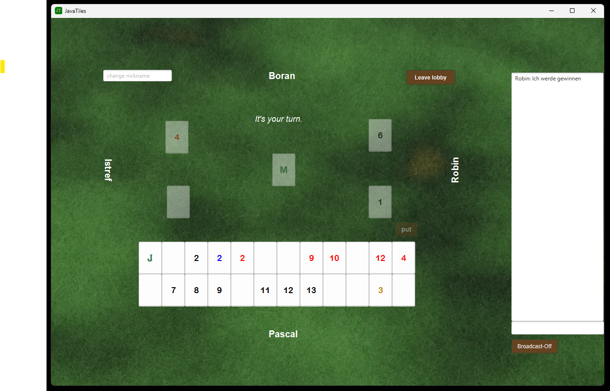

Programmierprojekt - Computerspiele
JavaTiles
JavaTiles ist ein spannendes und strategisches Spiel, das auf den Regeln von Okey basiert.

Trailer
Sorry, your browser doesn't support embedded videos.
Entwickler:
Istref Uka
Pascal von Fellenberg
Robin Gökçen
Boran Gökçen
Steuerung:
Maus:
Steine und Knöpfe anklicken